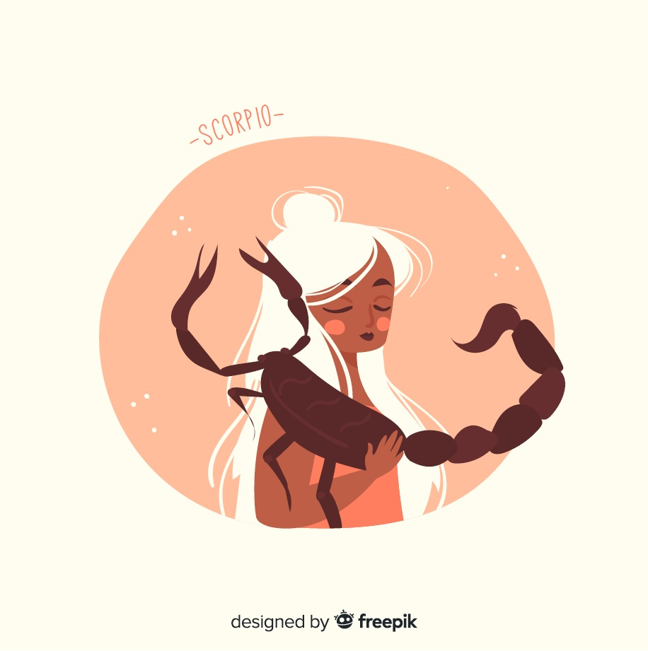

Scorpion
(23 octobre - 21 novembre)
De nouvelles préoccupations amoureuses s’articulent autour des nombreuses prises de conscience qui vous ont ouvert les yeux dernièrement. Vous mettez en place un beau changement de vie. Vous savez où vous devez aller. Sinon, un patron vous impliquera dans un projet.